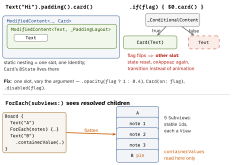

swiftui · folio
In one line: A modifier wraps the view in a generic type (ModifiedContent<Content, M>) —
static structure, so the wrap keeps identity. Reuse has three shapes: a ViewModifier
(a look that may own state), a style (a control’s look without losing its behaviour,
inherited through the environment) and, since iOS 18, a custom container that lays out the
resolved subviews of its content.
Download PDF Print view LaTeX source

How it works
ViewModifier:body(content:); may hold@State/@Environmentlike a view. Publish viaextension View { func card(). A stateless helper can just be the extension.->some View { modifier(Card()) } }- Content parameters:
struct Board<Content: View>+@ViewBuilder var content: Content(orinit(@ViewBuilder content:)that calls it). Store the built view, not the closure — closures never compare equal, so the child always re-runs. - Styles:
ButtonStyle.makeBody(configuration:)getslabel,isPressed,role— tap, disabled state and accessibility stay the system’s.PrimitiveButtonStyle: you own the interaction, callconfiguration.trigger(). AlsoToggleStyle($configuration.isOn),LabelStyle(title,icon). - Propagation:
.buttonStyle(.pill)/.toggleStyle(.switch)on a container styles every control below (environment; nearest wins). Sugar:extension ButtonStyle where Self.==Pill { static var pill: Pill { .init() } } - Custom containers (18):
ForEach(subviews: content)orGroup(subviews: content) { subs in }— aSubviewsCollection(count,[i], slices; built on demand). Content is resolved: aForEachof 5 = 5 subviews,Groups flattened.Subview=IdentifiableViewproxy, resolved in the container’s environment; the child’s own modifiers apply first.ForEach(sections:)→SectionConfiguration(header / content / footer). - Container values (18):
@Entryinextension ContainerValues; child.containerValue(\.isPinned, true); container readssub.containerValues.isPinned. Direct container only, no merge, never escapes (unlike preferences). @Entry(Xcode 16 macro, back-deploys): key boilerplate forEnvironmentValues,Transaction,ContainerValues,FocusedValues(focused:Optional, no default).- Type shapes:
some View/ genericContent= one static type the diff can see through;AnyView= runtime box, a new wrapped type replaces the subtree..equatable()lets your==skipbody.
Traps
- The popular
.if(cond) { $0.mod() }extension =_ConditionalContent: identity flips with the flag — lost state, broken animations. Vary arguments. onTapGestureon a styledTextinstead of aButton— no button trait, no disabled state, no keyboard / pointer. Restyle withButtonStyle.- Own gesture inside a
ButtonStylelabel fights the system tap —PrimitiveButtonStyle+trigger(). - A style on a
Subviewmay do nothing: it can already be a styled leaf. AnyViewfrom a protocol so “types line up” — useassociatedtype Body: View/@ViewBuilder.- Pre-18 containers via
_VariadicView— underscored, unsupported.
Wrap vs branch

Example — modifier, style, container
struct Card: ViewModifier {
@Environment(\.colorScheme) private var scheme
func body(content: Content) -> some View {
content.padding(12)
.background(.background, in: .rect(cornerRadius: 12))
.shadow(radius: scheme == .dark ? 0 : 4) } }
extension View { func card() -> some View { modifier(Card()) } }
struct Pill: ButtonStyle { // look only
func makeBody(configuration: Configuration) -> some View {
configuration.label.padding(8).background(.tint, in: .capsule)
.opacity(configuration.isPressed ? 0.6 : 1) } }
extension ContainerValues { @Entry var isPinned = false }
struct Board<Content: View>: View { // iOS 18
@ViewBuilder var content: Content // built view
var body: some View {
VStack { ForEach(subviews: content) { sub in
sub.card().overlay(alignment: .topTrailing) {
if sub.containerValues.isPinned { PinBadge() } }
} } } }